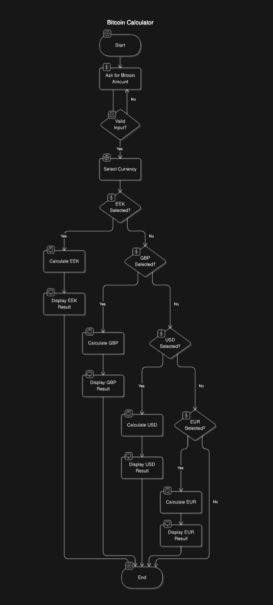

Bitcoin Kalkulaator on rakendus, mis võimaldab kasutajatel hõlpsasti teisendada Bitcoinide summasid erinevatesse valuutadesse, sealhulgas USD, EUR, GBP ja EEK. Sellel on lihtne ja kasutajasõbralik liides,
mis juhendab kasutajat igal sammul, et saavutada soovitud tulemus.
Teisendamine algab sellega, et kasutaja sisestab Bitcoini summa ja valib valuuta, millesse soovib selle konverteerida. Programm kontrollib esmalt, et sisestatud andmed oleksid korrektsed – summa lahter
ei tohi olla tühi, sisestatud väärtus peab olema suurem kui null, ja kasutaja peab valima ühe neljast pakutud valuutast. Kui sisend on kontrollitud ja korrektne,
kasutab kalkulaator Coindeski API-d, et hankida reaalajas vahetuskursid USD, EUR ja GBP jaoks. Eesti krooni (EEK) puhul arvutatakse summa EUR kursi põhjal, kasutades ajaloolist
fikseeritud teisendust (1 EUR = 15.6466 EEK).
Pärast vahetuskursi määramist arvutab rakendus Bitcoini väärtuse valitud valuutas ning kuvab tulemuse selgelt ja arusaadavalt.
